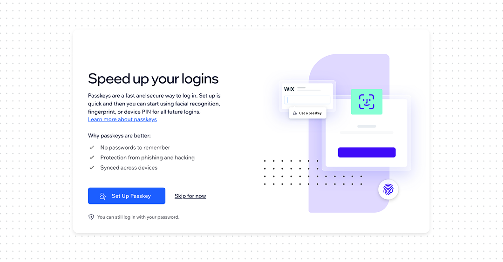
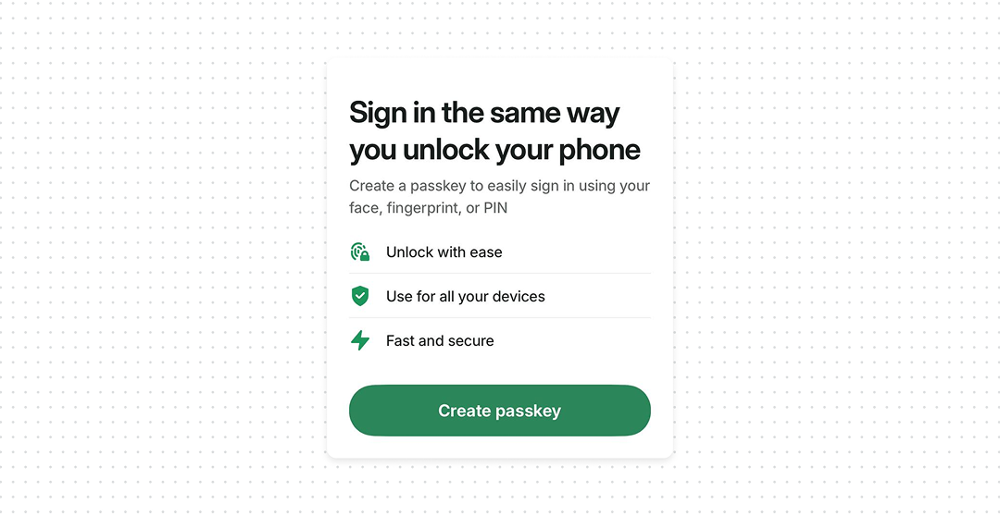
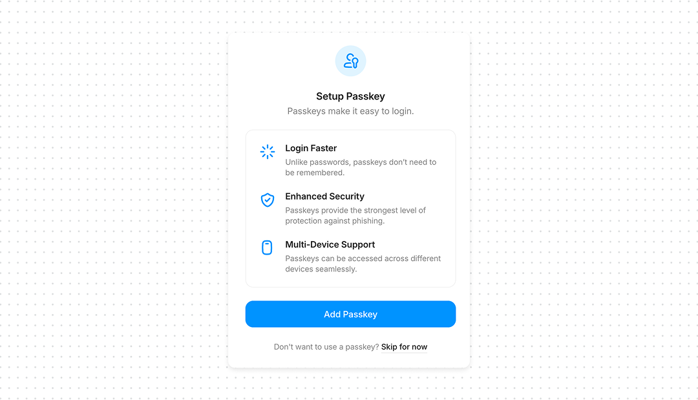
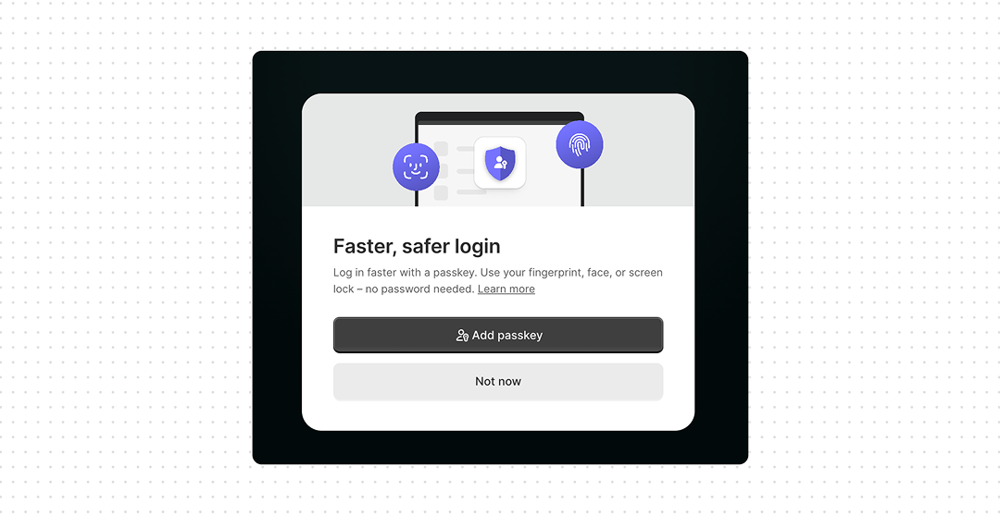

Passkey: How to design, UX best practices & examples

Passwords are still one of the easiest things to phish. A fake login page can look exactly like the real one, and users can still type their password into it.
Passkeys change this. The device uses a cryptographic credential to prove that the user has access to it. So even if a phishing page looks identical to the real one, there is no password to steal.
The problem is that most users won’t go looking for passkey. They don’t regularly open Security Settings to see whether a better login method has appeared.
A much better moment is immediately after a successful password login. The user has just typed their password. That’s when you can offer: “Set up a passkey and sign in faster next time”. The value is obvious because the user has just experienced the problem.
What good UX looks like
- Offer passkeys after login. Don’t make users discover them in Settings. The successful password login is a natural moment to introduce them.
- Explain the benefit, not the technology. “Sign in with Face ID instead of typing your password” is more useful than “Enable FIDO2 authentication”.
- Keep passkey management in Settings. Users still need to see, add, and remove passkeys, especially after losing or replacing a device.
- Design recovery together with passkeys. A strong authentication method with a weak recovery flow just creates a new attack path.




Bottom line
Passkeys remove the password that attackers try to steal through phishing. Don’t wait for users to find passkey. Let them experience the friction of a password once, then offer a faster and safer way to sign in next time.
A passkey is a credential based on public-key (asymmetric) cryptography, built on the WebAuthn/FIDO2 standard. When you register a passkey, your device generates a key pair locally: a private key and a public key. The private key never leaves the device, it’s stored in hardware-backed secure storage (a Secure Enclave, TPM, or equivalent). Only the public key is sent to and stored by the server (the “relying party”).
Each credential is also scoped to a specific relying party ID at creation time, which is what makes it origin-bound: a passkey created for
example.comsimply won’t produce a valid signature forevil-example.com, no matter how convincing the fake page looks.Passkeys can be device-bound (tied to one physical authenticator, like a hardware security key) or synced – backed up and shared across a user’s devices via a platform provider such as iCloud Keychain or Google Password Manager.
One caveat worth knowing: this guarantee holds for the direct authentication ceremony. Cross-device sign-in flows, where you approve a login from a second device, sit outside that same-origin check and depend more on the user trusting the right context – which is a smaller, but real, surface attackers have started probing.